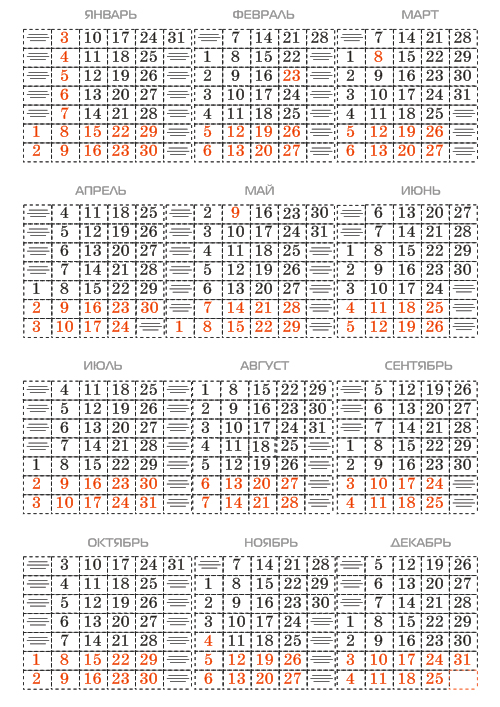
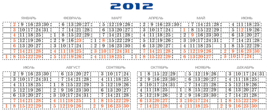

«ВЕЧНЫЙ» КАЛЕНДАРЬ
Тем дизайнерам, которые не хотят довольствоваться календарными сетками, получаемыми с помощью макроса или ещё откуда-то, а хотят создать свой оригинальный художественный или просто табель–календарь, предлагаю способ, который позволит Вам использовать Ваш календарь в качестве шаблона для создания аналогичного календаря и в последующие годы, причём с невероятной лёгкостью.
Чтобы из календаря текущего года сделать календарь на следующий, нужно всего лишь, выбрав инструмент Текст, поставить курсор перед числом 1 января и нажатием клавиши «Enter» «сдвинуть» все числа на одну ячейку вниз.Такой шаблон можно использовать и для создания других шаблонов табеля–календаря, организованного по другой схеме.
Конечно на создание первого варианта придётся затратить некоторое время, зато из созданного календаря календарь на следующий год можно будет получить буквально одним нажатием клавиши (не считая действий по «перекрашиванию» чисел, соответствующих выходным дням и случая с високосным годом).
Дело в том, что этот календарь представляет собой матрицу из чисел, которые Вы располагаете по любой нужной Вам схеме: месяцы расположены или по схеме 3 х 4, или 6 х 2, или все 12 месяцев в одну строку, или в два столбца, как угодно.
Каждое число занимает свою ячейку, как в таблице. Только каждая такая ячейка – это текстовая рамка, такая маленькая, что в каждой текстовой рамке помещается одно число. Все ячейки последовательно связаны между собой как связанные текстовые блоки. Размер шрифта должен быть подобран соответственно размеру ячейки: не должен быть слишком большим, чтобы число могло свободно поместиться в ячейке, и не должен быть слишком маленьким, чтобы в одной ячейке не могло поместиться два числа, обычно это примерно 50 – 70 % высоты ячейки.
Начиная создание календаря, определитесь с первоначальной схемой. Допустим, это будет блок, где месяцы организованы по схеме 3 х 4.
Прикиньте, какой понадобится размер ячейки. Это не маловажный момент, т.к. масштабировать календарь можно будет только переведя все числа в кривые. При этом все связи между числами будут утрачены и календарь перестанет быть шаблоном для последующих календарей.
Создайте одну ячейку (текстовый блок) и с помощью окна Преобразование дублируйте шесть раз со смещением вниз, с шагом, равным высоте ячейки. Получилась колонка для одной недели. Затем дублируйте всю группу из семи ячеек со смещением вправо, также с шагом, равным ширине ячейки пятнадцать раз. Получилась матрица для трёх месяцев. Выделите её и продублируйте три раза со смещением вниз, несколько большим, чем высота полученной матрицы, чтобы было место для названий месяцев. В случае другой схемы дублируйте недели столько раз, сколько нужно, чтобы получить матрицу, соответствующую вашей схеме.
Теперь заполним ячейки числами календаря (см. рисунок ниже).

Затем, набравшись немного терпения, свяжем последовательно все текстовые блоки–ячейки, включая свободные между числами соседних месяцев. Включение свободных ячеек между месяцами не лишнее, это позволит минимизировать переползание чисел одного месяца к числам другого, когда Вы будете использовать этот календарь–шаблон в будущем.
На рисунке ниже видно, как после связывания ячеек все числа переползли к началу матрицы.

Выбрав инструмент Текст, поставьте курсор перед 1 января, и нажатием «Enter» несколько раз поставьте число 1 января на соответствующее место (если 31 декабря нынешнего, 2010-го года приходится на пятницу, то 1 января следующего, 2011-го года должно быть субботой).
Затем, устанавливая курсор перед 1 числом каждого последующего месяца, и нажимая «Enter» подряд по 7 раз, сдвигаете каждый месяц на одну колонку правее. Нажатия можно делать достаточно быстро, не дожидаясь, когда все числа перестроятся полностью.
Добавьте названия месяцев, дни недели, само число года в отдельном слое, чтобы они пока не мешали.
Готовый календарь–шаблон показан на рисунке ниже.

На его примере рассмотрим создание на его основе следующего календаря на 2012 год. Не забудьте, что 2012 год – високосный.
Но для любого года переделка календаря начинается с того, что мы смотрим, каким днём недели оканчивается текущий год. В рассматриваемом примере 2011 год оканчивается субботой. Поэтому сначала устанавливаем 1 января на воскресенье.
Затем в феврале, после числа 28, в ячейку ниже надо будет добавить число 29 и нажатием клавиши «Enter» «столкнуть» все последующие числа на одну ячейку вниз. (Високосные годы те, у которых число в двух младших разрядах кратно 4, кроме годов, заканчивающихся на 100).
После подвижек чисел выделите сразу все числа и «перекрасьте» их в чёрный, затем, выделяя рамкой числа, соответствующие выходным, «перекрасьте» их в красный. В данном примере в рамку можно захватывать числа поквартально.
На рисунке ниже видно, как после добавления 29 февраля и сталкивания последующих чисел вниз на одну ячейку, числа последнего квартала сместились на колонку правее и пропало (вытеснилось) 31 декабря.

Поставив курсор в ячейку левее 1 октября, нажмите подряд 7 раз «Delete».
На рисунке ниже видно, что числа последних трёх месяцев «вернулись» на своё место.

После «перекрашивания» выходных и праздничных дней календарь на 2012 год готов.

Для улучшения вида можно чуть придвинуть колонки с одноразрядными числами к соседним, чтобы интервалы между колонками были примерно одинаковы. Лучше это делать не с шаблоном, а сохранить в другой файл и перевести числа в кривые.
При желании «перекроить» календарь-шаблон по другой схеме, группируйте числа одного месяца, вместе с названием месяца, и перетаскивайте на новое место.

Специально для cdrpro.ru
Копирование урока или части его и публикация любым способом без письменного согласия автора запрещены.


выходные дни можно не перекрашивать каждый раз, а положить сверху длинный красный прямоугольник с линзой If Lighter - 0. Тогда все черные цифры, попавшие под прямоугольник автоматом станут красными, белый же цвет останется неизменным.
shark, Отлично! Спасибо!
Такая идея , применение чего-то вроде светофильтра, у меня была.
Но вот на эксперименты не хватило времени.
Воистину правда : одна голова – хорошо, а две – лучше.
Вот что значит коллективный разум! Больше общаешься, больше развиваешься сам.
Спасибо!
вот еще бы на видное место файлик в *.cdt положил :)
mmgs, Слово шаблон в данном уроке и вообще применяю в широком смысле слова, т.е. как некая заготовка, используемая для изотовления на её основе чего-либо.
Файлами типа cdt не пользуюсь вообще, ибо не приемлю предложенную разработчиками программы систему классификации документов. Такие вещи отношу к области "медвежьих услуг".
Выложить готовый файл не трудно, но на мой взгляд это как-то противоречит самому смыслу урока.
мне несложно это сделать и самому, просил просто для экономии времени.
а чем вам так не нравится идеология шаблонов?
я их использую (очень редко) для того чтобы по запарке не сохранить изменение в нем, тоесть при сохранении он запросит новое имя файла и шаблон останется целым. очень полезны они для хранения болванок договоров и прочих гарантийных писем (в ворде), чтобы менеджерские курицы в нем ничего не наизменяли и потом не говорили что они ничего не трогали.
Добавлено (22.12.2010, 12:29)
---------------------------------------------
а так да, зачастую готовые шаблоны из комплекта малополезны
пытался сделать "вечность" при помощи табуляции, но корел почему-то при переходе на другую строку не табулирует на нужное место а ставит скраю. приходится ставить перевод строки что не удобно делать в каждом месяце, да и вечность получается корявая.
как сделать чтобы табулировал как надо?
смотрите пример в приложенном файле. первые две строки с абзацем, а на остальных табуляция, которая первую позицию не табулирует, отчего два числа съезжаются и вобще верстка становится неверной.
Делать видимо вам всем нечего. Есть же генератор календарей.
Я ещё несколько лет назад сделал себе несколько пресетов для него, а теперь только выбираю нужный, меняю год и всё, календарь готов.
я знаю про генератор и давно и успешно им пользуюсь.
просто для "особо изысканных дизайнов" приходится делать это вручную - не всегда пресеты подходят.
вот и хотелось бы разобраться как заставить его табулировать по человечески при переходе строки.
mmgs,
В Вашем файле всё нормально, не считая, что после чисел 16 и 23 нет знака перевода строки.
Все табуляции работают, только почему-то они у Вас настроены с выравниванием по центру.
Наверно Вам рано календарями заниматься.
выравнивание по центру это типа желание заказчика :(
как раз я и хотел показать, что если ставить перевод строки то табуляция работает, а если не ставить, то переход табуляции на новую строку не табулирует на нужное место, а выравнивает по краю текстового блока.
как это победить? и вобще это баг или фича?
Страницы